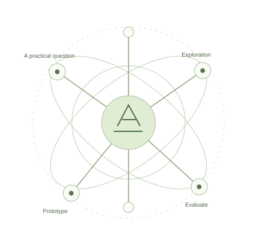

Connected by design. Built around
your organisation.Illustrative architecture · no client systems or data
Our core solutions
Built for the way your organisation works.
From a single approval process to an organisation-wide platform, we
turn operational complexity into useful software.
Organisation
Potential scope
ERP systems
Bring every department into the picture.
Connect finance, procurement, inventory, HR, assets, and reporting
around the way your organisation operates. Reduce disconnected
records and give teams a shared view of their work.
Coordinate requests, approvals, document routing, and
responsibilities. Build notifications and escalations around your
policies so work moves between people with less manual follow-up.
Support member administration, savings, contributions, lending,
and repayments in one considered system. Help teams prepare
statements and reports with a clearer view of member activity.
Manage recurring or metered billing, invoices, payments, and
arrears. Connect account activity with reconciliation to help your
team understand what is billed, paid, and outstanding.
Develop portals, operational platforms, and web or mobile
applications for requirements that off-the-shelf tools cannot
fully address. Connect existing systems and make everyday work
easier.
We help businesses and institutions turn complex processes into
dependable software.
Our work connects people, information, and operations through
systems designed around each organisation’s needs.
We combine software engineering, thoughtful design,
infrastructure, and ongoing support, with a commitment to
maintainability and client confidentiality.
Your operations come first
We start with the people and processes the system needs to
support.
A clear, shared scope
Requirements and milestones give both teams a practical basis
for decisions.
Beyond the first release
Maintenance and further development are part of the
conversation.
The engineering behind it
From the interface to the infrastructure.
The right system needs more than features. We connect design, data,
and delivery to support the work it has to do.
Web & mobile applications
Give staff and customers useful tools wherever they work, from
browser-based portals to mobile experiences.
↗
APIs & systems integration
Connect platforms and exchange information so teams can avoid
re-entering the same data.
↗
Cloud infrastructure & DevOps
Plan hosting, deployment workflows, and operational visibility
around the needs of your application.
↗
Data migration & analytics
Prepare data for a new system and turn operational records into
useful reporting and decision support.
↗
Applied AI & automation
Evaluate focused use cases such as document processing and
knowledge retrieval, with human review where needed.
↗
Product research & interface design
Understand user needs, map tasks, and test interface ideas before
committing to a full build.
↗
Modernisation & ongoing support
Improve existing systems, maintain software, and plan further
development as organisational needs change.
↗
Research & innovation
In partnership with Aphorion Labs
Engineering for today. Exploring what comes next.
Through our research partnership with Aphorion Labs, we advance
innovation and explore new possibilities in artificial
intelligence, data systems, and computational efficiency.
The partnership connects practical organisational needs with
emerging research, creating opportunities to prototype and
evaluate new technology.
Aphorion Labs is our research partner. Its research and inventions
belong to Aphorion Labs. Prototypes are exploratory and are not
presented as deployed client systems.

Practical questions. New possibilities.
What we build
A look at the possibilities.
Purpose-built examples show how we think about organisational
software. These are illustrations, never client projects.
ERP & workflow
Illustrative example · synthetic data
Purchase requestExample PR-024
Office equipment12 units
DepartmentExample operations team
Request→Review→Approve
A clearer path from request to approval.
An ERP or workflow engagement can connect requests, supporting
documents, responsibilities, and approval decisions in one
process.
Our capabilities are public. Client systems remain private.
We do not publicly disclose the client systems we build, including
client identities, deployment links, screenshots, internal
workflows, architecture, or operational data.
We demonstrate our expertise through descriptions of our
capabilities, our engineering approach, and purpose-built examples
using synthetic data.
Public research partnerships are separate from confidential client
delivery. The partnership does not imply that client information
is shared with research partners.